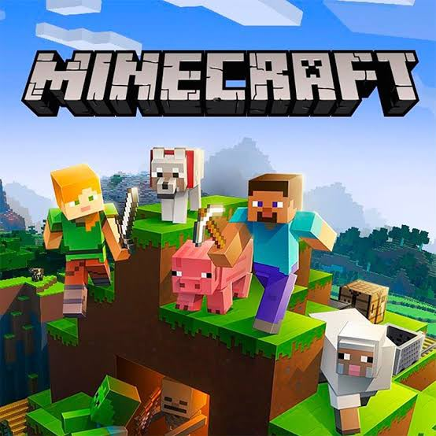

My Minecraft Adventure
September 30, 2026 by Amoya Morris

Minecraft is a game that gives players the opportunity to explore a world filled with creativity and adventure. One of my favourite parts of the game is being able to start with almost nothing and gradually collect materials, construct buildings and explore new environments. Every new world creates a different experience because players are free to decide what they want to build and how they want to survive.
The game also encourages creativity and problem solving. Players must decide how to use limited resources, protect themselves from hostile creatures and create tools that will help them progress. Whether someone wants to build a small house or an entire city, Minecraft provides many opportunities to experiment and create something unique.